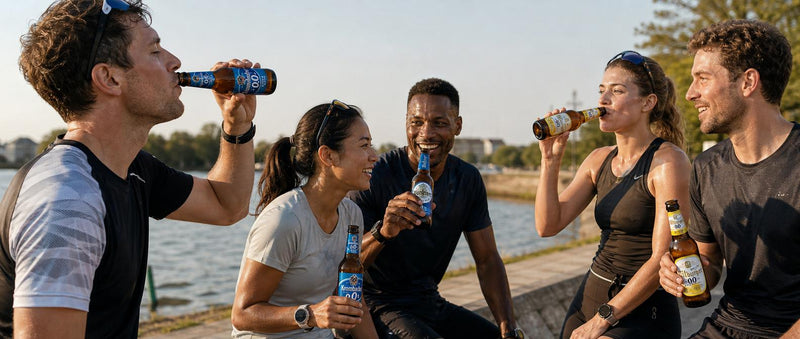
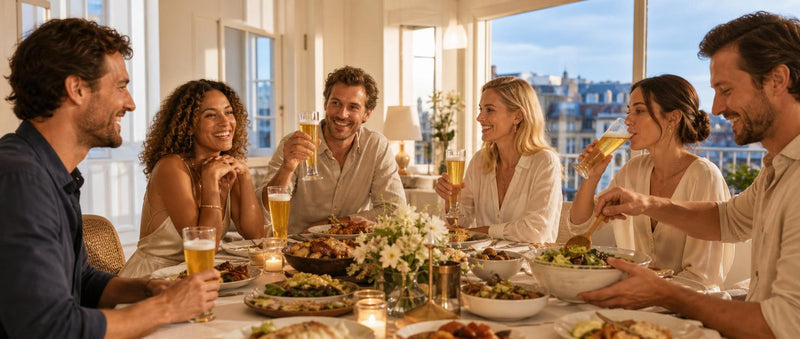

Après l'effort
Radlers fraîches et isotoniques pour récupérer sans casser l'effort de la séance.
Après le sport, à table, au jardin ou juste pour te rafraîchir : trouve la bière sans alcool qui va avec.

Radlers fraîches et isotoniques pour récupérer sans casser l'effort de la séance.

Des blondes légères et désaltérantes, pour une pause qui fait vraiment du bien.

Des profils plus expressifs, à prendre le temps de savourer.

Pour accompagner un repas ou une soirée entre amis, sans lendemain difficile.